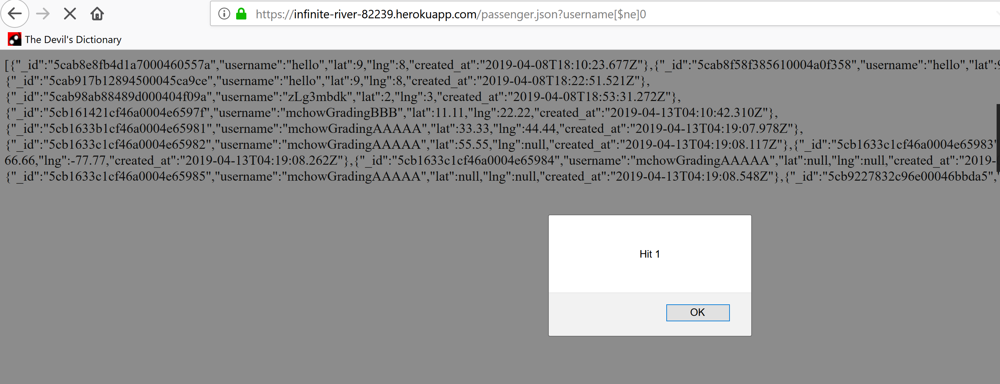
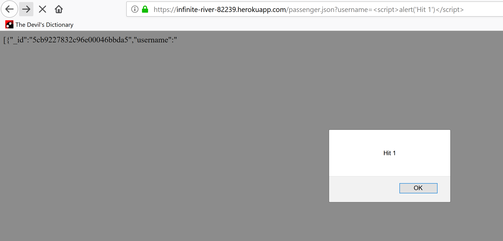
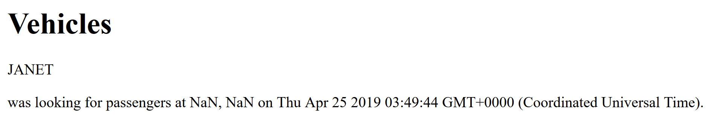

Security Analysis of Ridesharing Service
Introduction
The product under review is a client and backend database to connect passengers with drivers for a carpool
service akin to the popular Uber and Lyft. Users are provided with the ability to post their location and
receive in return a list of the most recent users of the other type.
This review was commissioned to determine any security flaws present in the application, and to recommend
possible revisions to fix these flaws.
Methodology
The product was assessed by hand and with the assistance of two tools. Possible weaknesses were first probed with
handcrafted payloads. Other flaws were then found with OWASP ZAP, and burpsuite was used in experimenting
with packet payloads.
Abstract of Findings
Three main issues were found in the product. They are, in decreasing order of severity,
-
Compromised Privacy
- Attackers are able to view the records of all other passengers in the
database
-
XSS injection through username
- Attackers are able to insert code that will be run with
the permissions of the website, when a page is viewed.
-
Faulty Logic
- The database will record users even if provided fields (username and location)
are not valid
Issues Found
The three issues mentioned before, broken down:
Compromised Privacy
-
Location: /passenger.json GET request
-
Severity of Issue: Medium-High; this is a very easy vulnerability to exploit, with all of the collected
user data at risk of being revealed to any attacker.
-
Description of Issue: No input sanitization enables attacker to provide logic on GET request,
thereby printing the entirety of the database.
-
Proof of Vulnerability:
NOTE: due to an injected redirection payload, the entirety of the page is not visible at once without
being forced off of the page; ignore the alert, the background is what's interesting.
-
Resolution:
Sanitizing the query string by removing
all invalid characters (the passenger usernames should only have alphanumeric characters), possibly through the use of the NodeJS validator library, would patch this exploit. Alternatively, you could reject any requests with invalid characters (ie response.send("error: Whoops, something is wrong with your data!"); ).
XSS Injection
-
Location: Username entry API and GET route /passenger.json
-
Severity of Issue: Medium; XSS can be a large problem, but the injection possible here is relatively
out of the way of a normal user.
-
Description of Issue: A lack of input sanitization on the username field allows attackers to input
scripting in the field and, then access the relevant passenger.json to run the script.
-
Proof of Vulnerability: 
-
Resolution: Similar to the previous exploit, this one can be solved fairly easily by using validator to forbid non-alphanumeric characters in usernames. Either removing the characters or sending a failure response if there is an invalid character would work.
Faulty Logic
-
Location: POST request api
-
Severity of Issue: Low; very little is at risk aside from database pollution with junk data.
-
Description of Issue: The checks to affirm the username, lat, and lng are valid are not stringent enough,
and permit documents to be created in the database with one or more fields meaningless; although there are
checks in place to ensure lat and lng are in the valid range if they are numbers, there are no checks to
ensure that they are numbers in the first place; a lat and lng of NaN is quite possible and quite useless.
-
Proof of Vulnerability: 
-
Resolution: Returning a "faulty data response" (eg, with response.send("error: Whoops, something is wrong with your data!");) if either lat or lng
are NaN would solve this problem rather simply. Sanitizing username already falls under the XSS injection
mentioned earlier, but is a similar problem.
Conclusion
Some future considerations include scalability and impersonation issues. Server load issues were not tested in this
investigation, but with the current setup will certainly be an issue. In addition, it is very easy for users to
impersonate others by making a POST request with their username, then making future POST requests with whatever usernames
were returned as nearby. This enables passengers to see all other passengers, as well as simply cluttering the database
with incorrect data.
References
In completing this evaluation, the questions and answers on Piazza were consulted heavily. In particular, this site recommended on Piazza was quite helpful.